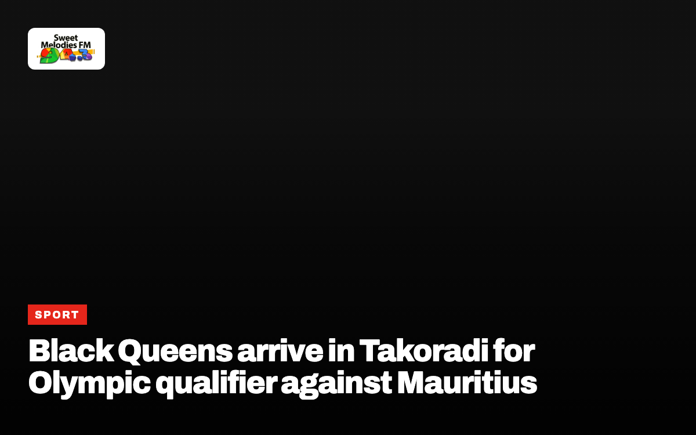

Sweet Moments 98.1 FM
Takoradi · serving the Western & Western North Regions
Listen to 94.3 live98.1 FM is on air across Takoradi. Online, listen with our Accra sister station.
News from the Western & Western North Regions

Mahama asks Western North chiefs to back galamsey fight
The government plans a 400 million cedi allocation for water guards as illegal mining drags students into pits.
CommunityAgona Nkwanta police arrest husband over viral assault video
A thirty-year-old farmer in the Western Region faces court after video showed him beating his wife.
SportGFA fines Bibiani Gold Stars over CEO misconduct
The Ghana Football Association penalised the Western North club GH¢5,000 following an incident involving CEO Kwasi Adu during a match against Hearts of Oak.

Black Queens arrive in Takoradi for Olympic qualifier against Mauritius
Ghana’s women’s national team holds a 3-0 lead heading into the second leg match at Essipong Stadium.
SportBlack Queens host Mauritius in Olympic qualifier at reopened Essipong Stadium
Ghana holds a 3-0 advantage heading into the second leg of the 2028 Olympic qualifier in Sekondi-Takoradi.
SportMedeama stay top of Ghana Premier League as Kotoko fall to All Blacks
Matchday six results saw Hearts of Oak, Bechem United and Berekum Chelsea secure victories on Sunday, 11 October 2026.
CommunityDVLA adds six local languages to driving theory test system
Applicants across Ghana can now take their driving examination in Twi, Ga, Ewe, Dagbani, Nzema or Hausa.
SportMedeama SC maintain Ghana Premier League lead as Hearts of Oak win
Medeama SC opened a three-point lead at the top of the Ghana Premier League table after matchday six victories.
Also reported from the Western & Western North Regions
- New NHIS district office commissioned in Jomoro as NHIA targets coverage gap 3News
- GNFS contains Somoco warehouse fire, bushfire in Takoradi Ghanaian Times
- MTN Engages Bogoso community, trains students in cyber safety Ghana News Agency
- Passenger arrivals at airport improved by 23% in first 7 months of 2026 MyJoyOnline
- Nkrumah Showboy: Chief Moomen’s play to explore Ghana’s first President’s early years MyJoyOnline
- GoldBod invests GHC35 million in Tano Nimri Forest Reserve reclamation 3News
- PAC directs UGMC to follow required procurement procedures when awarding contracts 3News
- From near-deferral to three awards: UMaT graduate’s academic journey MyJoyOnline
Church in the Western & Western North Regions
No services, crusades or conventions from the Western & Western North Regions on YouTube in the last three weeks yet.